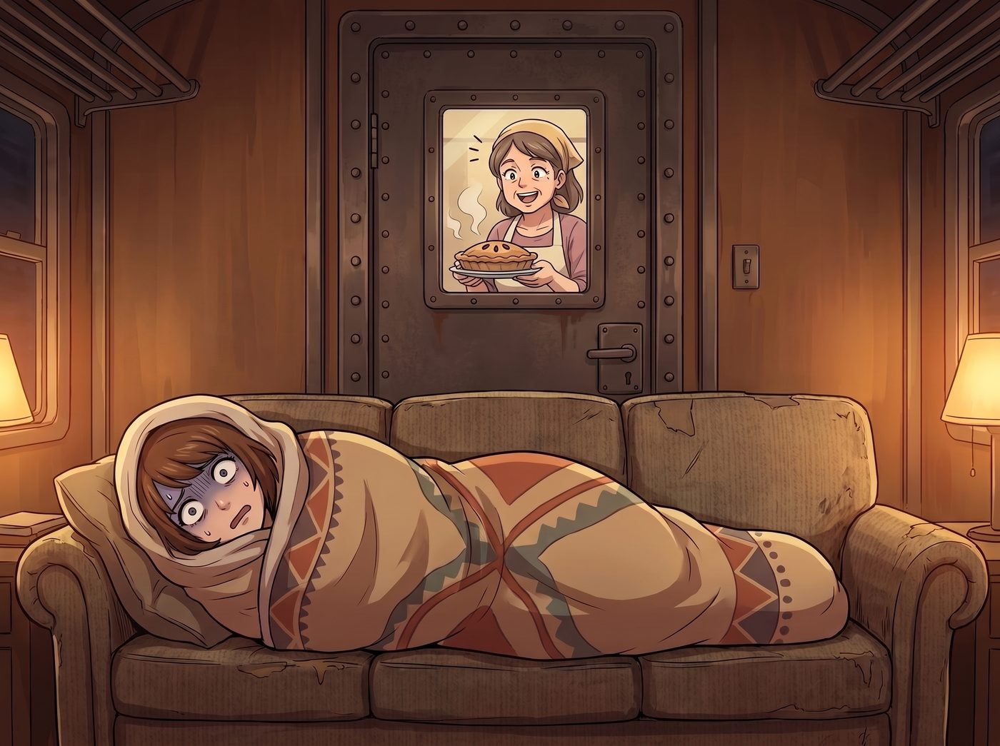

優雅的社交切割

當二號車廂那扇厚重的鐵門被敲響時，Max 正把自己裹成一個嚴絲合縫的毛毯捲，像一條失去生命跡象的鹹魚一樣癱在沙發上。
門外站著鎮上熱情的婦女會會長，手裡端著一盤剛烤好的藍莓派，正大聲邀請這群新搬來的小姑娘們參加週末的社區篝火晚會與二手市集。
Max 驚恐地睜開眼睛。她的社交電池在經歷了這幾週的核反應爐安裝、跨國金融做空以及應付父母的視訊後，已經徹底歸零。但她同樣清楚，在這種偏遠小鎮，如果拒絕了這種極具儀式感的社區邀請，她們馬上就會被貼上傲慢的外地怪胎甚至邪教團體的標籤。
一、不同的解決思路
Lily 剛推了推圓框眼鏡，準備打開平板電腦：「Max 學姐，需要我以車廂正在進行二級生物危害隔離演習為由，向州衛生部申請一張臨時的社交距離禁制令嗎？」
「把妳的聯邦法規收起來，實習生。我們今天不搞核打擊。」Victoria 優雅地從沙發上站起來，理了理身上的羊絨披肩，攔住了準備施展黑魔法的 Lily。名媛的眼神裡閃爍著屬於老錢家族的頂級公關智慧，「對付這種基層社交綁架，不能用合規性去威脅，必須用階級濾鏡去降維安撫。」
Victoria 轉頭看向正在廚房揉麵團的 Kate：「小天使，帶上妳剛烤好的那籃蔓越莓司康。我們去教教這條鹹魚，什麼叫做優雅的社交切割。」
二、深度封閉式創作期
一分鐘後，鐵門被打開。
門外的婦女會會長原本已經準備好了一套長篇大論的熱情說辭，但她瞬間被眼前的景象震懾住了——Victoria 穿著一身低調但剪裁極其奢華的休閒裝，散發著一種紐約上東區的冰冷高貴；而她身邊的 Kate 則像個下凡的天使，雙手捧著一籃散發著驚人香氣的精緻糕點，笑容純潔得讓人想當場懺悔。
「午安，夫人。這藍莓派看起來真是令人驚嘆的在地手工藝。」Victoria 微微欠身，用一種極度得體、挑不出任何毛病的外交辭令開場，完美地拉開了心理距離。
「噢……妳們好，我們週末有個篝火晚會，想說邀請妳們……特別是那位經常拿著相機在林子裡拍照的短髮女孩，大家都很想認識她呢。」會長有些侷促地遞上藍莓派。
「您說的是 Maxine。我們非常感謝鎮上的熱情。」Victoria 露出了一抹帶著遺憾的完美微笑，「但非常抱歉，Maxine 目前正處於深度封閉式創作期。」
Victoria 甚至刻意停頓了一下，讓這個聽起來極具藝術重量的詞彙在空氣中發酵：「她正在為接下來在西雅圖舉辦的一場大型個人前衛攝影展進行最後的靈感構思。在這個階段，任何世俗的社交與對話，都會打破她極度脆弱的靈感場域。為了保護她的藝術生命，我們作為她的經紀團隊，必須嚴格限制她的對外接觸。我相信，像您這樣熱愛生活與藝術的人，一定能理解一個天才創作者的痛苦與偏執吧？」
婦女會會長被這番話徹底唬住了。在小鎮居民的認知裡，不愛說話的怪人是會被排擠的，但正在痛苦創作的閉關天才藝術家卻是值得被敬畏的。
三、司康與支票的完美收尾
就在會長還在消化這巨大的信息量時，Kate 溫柔地走上前，將那籃剛出爐的蔓越莓司康遞了過去。
「會長女士，Max 雖然不能親自參加，但她心裡一直非常感激小鎮帶給她的靈感呢。」Kate 的聲音宛如春風拂面，那雙真誠的眼眸裡滿是歉意，「這是我們用鎮上超市買的有機麵粉烤的點心。另外……」
Victoria 恰到好處地從口袋裡抽出一張早已寫好的支票，輕輕壓在籃子邊緣。
「這是 Chase 畫廊以 Maxine 的名義，為本次社區篝火晚會提供的一千美金文化贊助。請務必收下，為孩子們多買一些熱狗和煙火。我們雖然無法到場，但我們的心與社區同在。」Victoria 的語氣不容拒絕，卻又充滿了慈善家的光輝。
會長看著那籃堪比米其林餐廳的糕點，再看看那張面額驚人的支票，最後一絲被拒絕的不悅也徹底煙消雲散了。她甚至因為自己差點打擾了天才藝術家的創作而感到有些愧疚，連連道謝後，捧著支票和點心心滿意足地離開了。
四、鹹魚的感激
當鐵門重新關上時，Chloe 靠在機櫃旁，對著 Victoria 吹了一聲響亮的口哨。
「哇哦，用一千塊錢和一堆聽不懂的藝術名詞，就把 Max 從社交地獄裡買出來了。資本主義的軟實力有時候還挺好用的嘛。」Chloe 嘲笑道。
「這叫公共關係預算，Price。總比 Lily 直接去查人家稅表要得體得多。」Victoria 拍了拍手上的並不存在的灰塵，高傲地走回沙發。
Lily 則坐在工作台前，拿著筆記本認真地記錄著什麼：「原來除了行政法規，藝術家免責條款與慈善金錢開道的組合，在基層社交場景中具備如此高效的阻斷作用。這為我以後的合規策略提供了新的靈感，謝謝 Victoria 學姐的示範。」
而依然裹在毛毯裡的 Max，看著那盤被換回來的藍莓派，長長地鬆了一口氣。她不僅完美保住了自己僅存的社交電池，沒有得罪任何人，甚至還莫名其妙地在鎮上樹立起了一個神秘、慷慨且才華橫溢的閉關藝術大師形象。在這個充滿魔法與資本的車廂裡，當一條鹹魚，顯然也是需要頂級團隊配合的。